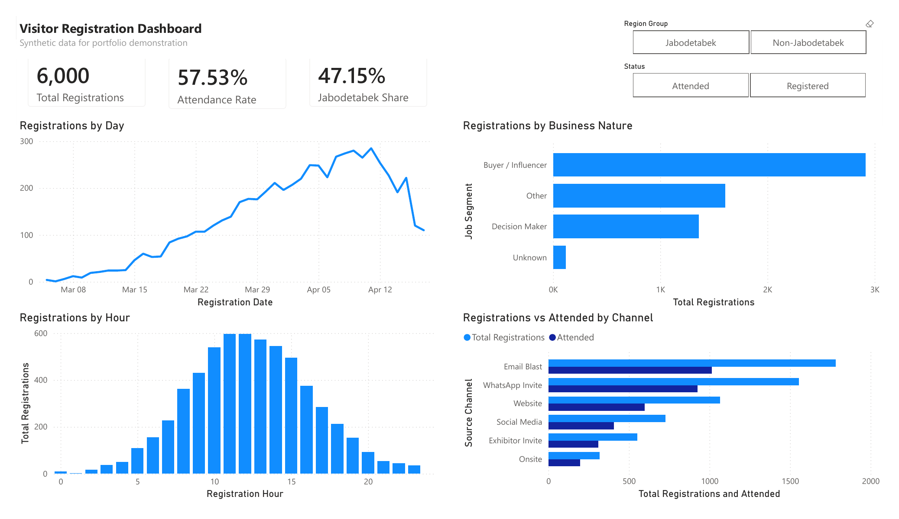
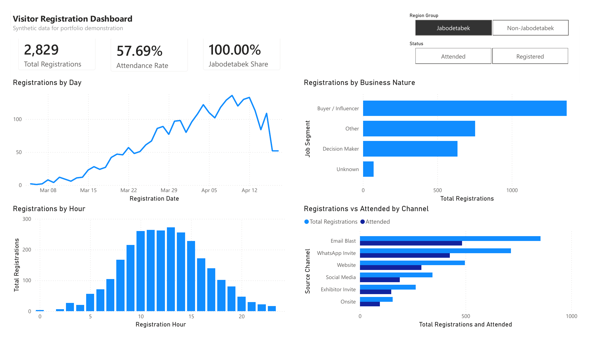
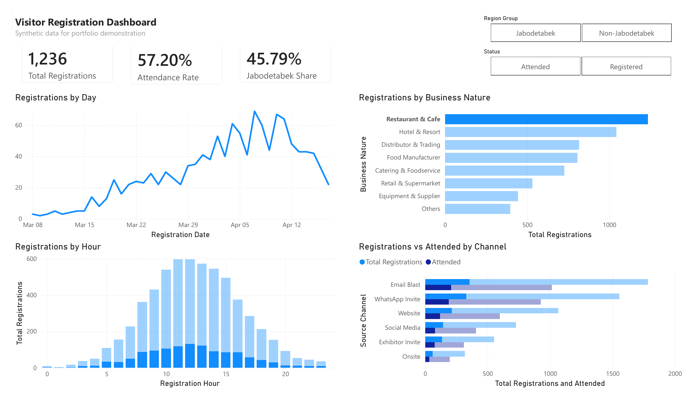

Event Visitor Registration Dashboard
Power BI. An event organizer received visitor registrations as three separate files with duplicate tickets, mixed phone formats, typo emails and inconsistent names. We combined and cleaned them, then built one dashboard to track registrations, attendance and channel performance.



6,060 → 6,000records after removing duplicate tickets
57.53%attendance rate
47.15%of visitors from Jabodetabek
What we did
- Combined 3 source tables in Power Query and removed duplicate ticket codes.
- Standardized names, cities, emails and phone numbers (all to the 62… format).
- Filled 120 blank job titles as "Unknown" so no visitor drops out of reports.
- Added calculated columns: Region Group, Job Segment, Registration Date and Hour.
- Wrote DAX measures for registrations, attendance and regional share.
What the dashboard shows
- When people register: by day and by hour.
- Who registers: business nature and job segment.
- Which channels bring people who actually show up.
- Filters for attendance status and region.
Before and after cleaning
Real rows from the source files and how they look after the Power Query steps.
| Field | Before | After |
|---|---|---|
| Full name | KIKI HIDAYAT | Kiki Hidayat |
| Full name | citra permata | Citra Permata |
| City | BANDUNG | Bandung |
| Phone | 0803-2848-4330 | 6280328484330 |
| Phone | +62 880 1551 127 | 628801551127 |
| Phone | 08260440952 | 628260440952 |
| eka.halim63@gmial.com | eka.halim63@gmail.com | |
| gita.nugroho22@example.co,id | gita.nugroho22@example.co.id | |
| Job title | (blank) | Unknown |
Duplicates were removed by Ticket Code, keeping the first record found.
Selected DAX
The measures behind the three headline cards.
Total Registrations = COUNTROWS ( Registrations )
Attended =
CALCULATE ( [Total Registrations], Registrations[Status] = "Attended" )
Attendance Rate = DIVIDE ( [Attended], [Total Registrations] )
Jabodetabek Share =
DIVIDE (
CALCULATE ( [Total Registrations], Registrations[Region Group] = "Jabodetabek" ),
[Total Registrations]
)Need a dashboard or cleaner data?
Send us a sample of your data and what you want to track. We will tell you what we can build and how long it takes.
Chat me on WhatsAppEmail usUpwork profileGitHubLinkedIn